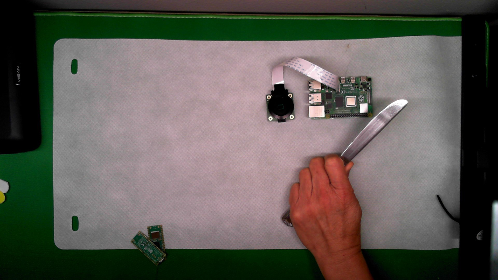
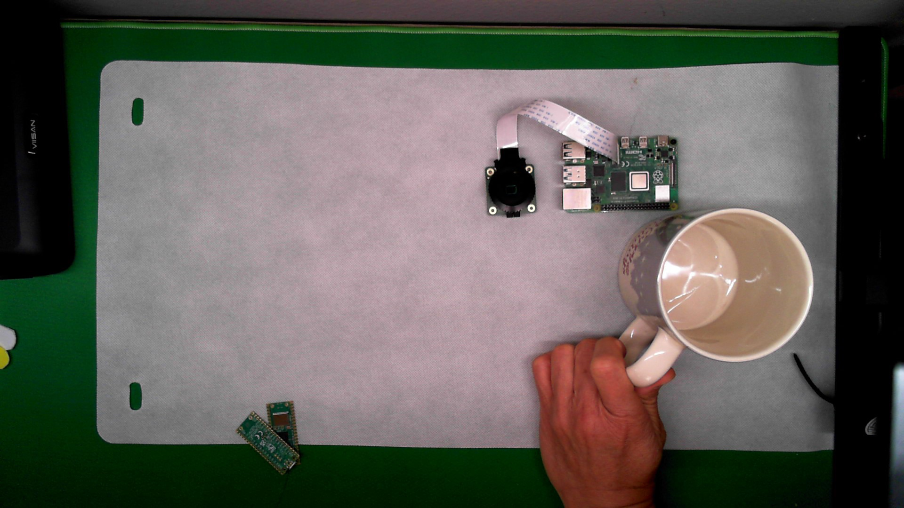
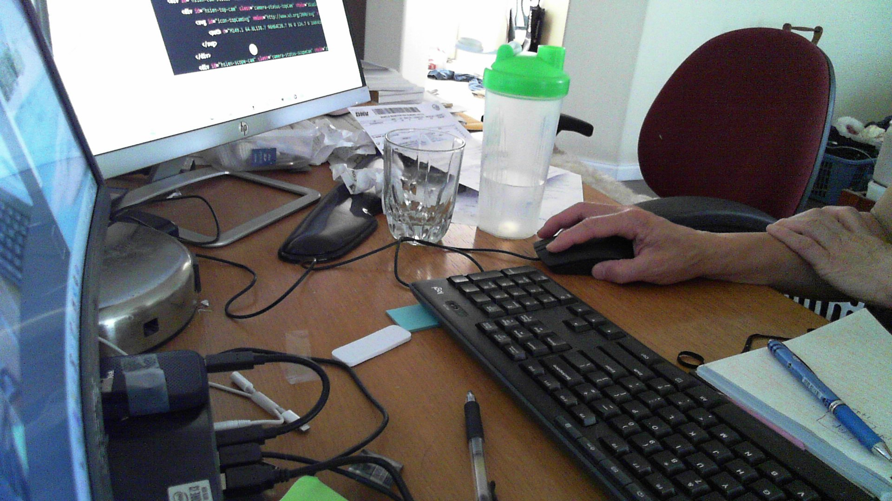

Next, let's review examples...
Posted on
In this section, we'll review some examples of work-in-progress (WIP) projects. By examining both successful and failed attempts, we can identify key practices to emulate and pitfalls to avoid.
Posted on
In this section, we'll review some examples of work-in-progress (WIP) projects. By examining both successful and failed attempts, we can identify key practices to emulate and pitfalls to avoid.
This is one of the most common errors: the operator may occasionally fail to lift the cap before soldering. This mistake can lead to poor electrical connections and potential failures in the final product. Always double-check that all components are properly prepared before soldering.

Here is another example: during the assembly process, the operator may fail to secure the XXX component properly. This can result in loose parts that could compromise the functionality and safety of the product. Ensure all components are firmly in place and secured according to the guidelines.

Shown in this picture is an example of proper assembly. Notice how all components are neatly aligned and secured. Following these best practices will ensure the reliability and quality of the final product. Aim for this level of precision in all your work.
